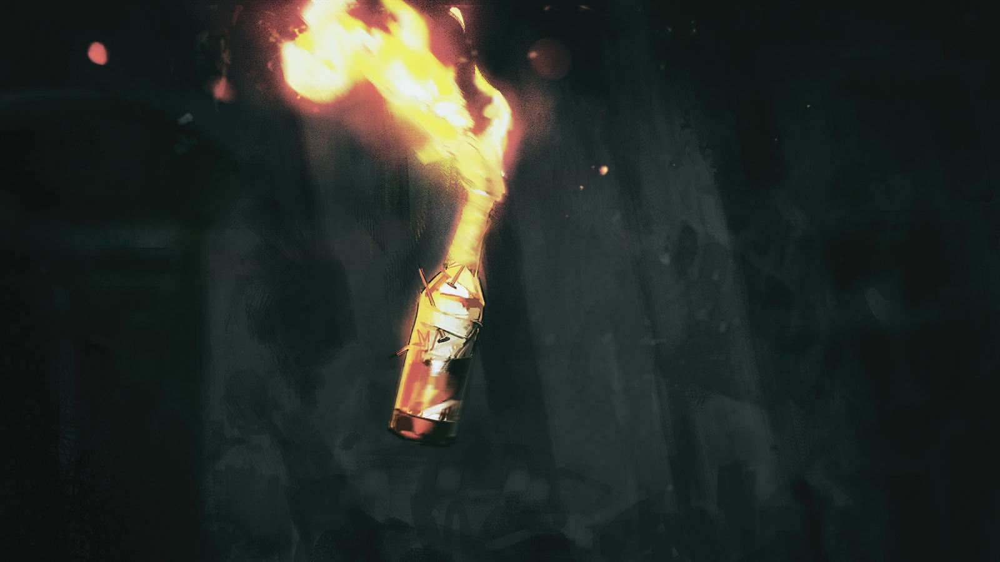

迷茫的战士
我们这是要去哪？
木讷的战士
扎莫列斯。
迷茫的战士
我听他们说，我们要去救一群集团军，这是真的吗？
木讷的战士
嗯。头儿强调过的，打进城之后，看见穿军服的，绝对不能动手。
迷茫的战士
这算怎么回事？！我们变成和集团军一伙的了？
木讷的战士
……
迷茫的战士
……塔露拉亲口这么说的？
木讷的战士
……嗯。

暴躁的军官
——该死、该死、该死！
暴躁的军官
这些侦察兵都在干什么，这么明显的偷袭都发现不了？！警戒工作怎么做的？

传令兵
报告长官，又有一处主警戒哨失去联系！
暴躁的军官
这次是哪支部队负责的位置？附近的联络中继点呢？
传令兵
是第三炮兵分队，离他们最近的联络中继点也已被攻占！
暴躁的军官
他妈的……这么多进攻点，哪里来的疯子敢这么打仗？！
暴躁的军官
敌人都是从哪里来的？
传令兵
不知道！敌人好像到处都是！
暴躁的军官
*乌萨斯粗口*——
两团冲天的火光，几乎同时在远处升起。接连不断的爆炸声表示这莫名其妙的袭击并未停止，且似乎离他们越来越近。

副官
——长官，我们的补给车队遭到了袭击！物资被敌人抢走了！
暴躁的军官
愣着干什么？还不派人去追！追上去看看到底是谁敢跟我们动手！
副官
长官，我们的任务是坚守阵地，围困扎莫列斯城内的中央集团军。
暴躁的军官
天杀的！还用你提醒吗？
暴躁的军官
再这样下去，就算我运气好没被这些偷袭搞死，等弄丢了所有的物资，我的脑袋也会被叶甫根尼摘了拿去当球踢！
副官
可是——
暴躁的军官
够了！敌人的人数一定远低于我们，否则不会像这样跟我们捉迷藏。
暴躁的军官
除了驻地联络点人员，其余人，都跟我走！

雷德
西侧开始动了。
雷德
我们拔掉剩下两个点之后，立刻前往预定联络点。
九
收到，我们也在来的路上……
雷德
你们那边怎么样？
九
出了一点小纰漏……但整体上还在按计划进行。

激动的士兵
长官，我们在反击时抓住了其中一个袭击者！
激动的士兵
他们全都戴着面具，看上去都是感染者！
冷静的军官
什么？
冷静的军官
感染者的军队……整合运动？那伙人为什么会来这里？
传令兵A
长官，驻地右侧盾卫阵地遭到术师袭击，请求支援！

传令兵B
报告——西侧驻地也遭到了类似袭击，他们正在向南转移！
冷静的军官
……我明白了。
冷静的军官
传令下去，术师配合盾卫集中重整布防。敌人想拉扯我们的防线，我们不能上当。
冷静的军官
让西侧部队派人扫荡后山，那里一定有敌人的伏兵。
冷静的军官
感染者竟敢主动向我们发起进攻……难道他们的目标，也是扎莫列斯？
红发的斐迪亚站在矮坡上，她紧紧盯住不远处的战场。集团军的动向尽收眼底，缓慢的行动令他们看上去失去了原本的威慑力。
她能清楚地感觉到，过度使用源石技艺后本应涌上来的疲倦被振奋替代。
身旁，枝蔓上花朵片片凋零，落到地面上，融入不断扩散的血迹之中。

九
虽然出了一些偏差……但还能挽救。
九
奥妮拉，敌人的动作有意料之外的变动。
九
要换一个决战场地了。
奥妮拉
收到，但时间太紧张，我们没办法准备得太完善。
九
没关系，尽可能抓紧时间……就用我们最擅长的打法。
副官
穿过这片山谷，还有半个小时就能与南部驻军会合。
暴躁的军官
很好。
暴躁的军官
整合运动……这些石头病疯子，不是说在远北已经杀了二十万吗，怎么还剩下这么多？
暴躁的军官
多少年了，还是要干这些打扫垃圾的活——
话音未落，猩红的术法光芒，从眼前的山谷出口亮起。
山壁两侧早已提前布下的简易陷阱同时响应，在庞大的崩裂声中，巨石不断从坡上滚落，整条道路被瞬间截断。
暴躁的军官
炮兵呢？把这些烂石头给我轰开——通讯兵！
传令兵
不，长官——这周围——
传令兵
那些不是一般的石头——上面沾满了源石粉尘！
两侧的山坡上，数十名术师同时施术，大地颤动的声音响彻山谷。
山谷内部，火焰、冰凌，与坚硬的岩石一同，碾向地上的军队。
九
第四集团军第二师团西部驻地主力军已清剿。
雷德
这就是你说的“小纰漏”？

九
南部驻军抓住了我们的一个同胞，他们应该是猜到了我们的计划。这是我的失误。
九
我没有联系上塔露拉，只能自行决定变动计划。
雷德
目前看起来差别不大，早杀晚杀而已。
九
……谢谢。
雷德
我们即将抵达预定联络点，我会尝试继续联系塔露拉。
九
时间差不多了，你可以先尝试向城中发送援军抵达的信号。
雷德
用那个皇帝的名义？
九
你不想做的话，就等我来——
雷德
我可以做。
雷德
你们注意安全，保存体力。后面还有一场硬仗。

米拉娜
雷德他们成功了。

整合运动战士
谢天谢地！我们也不能落后了！

米拉娜
是的，我们也不能落后。
米拉娜
现在撤退路线已经清理出来了，我们要做的就是确保这里不会被敌人袭击。
米拉娜
格奥尔基，现在你可以去帮费奥多尔先生，尝试联络城中的中央集团军了。
整合运动战士
就因为我懂点无线电就把这活派给我啊——
整合运动战士
对了，刚才我收到消息，东部驻军又调离了一支步兵队，可能是要去支援南部主力军。
米拉娜
好，通知雷德，让他们做好防备。

卡德尔
遇上了一支巡逻队，打得很艰难。好在他们人不多，不过还是放跑了三个。

米拉娜
卡德尔先生，你受伤了，必须马上包扎。

卡德尔
……我们还要这样受多久？

米拉娜
你说什么？
卡德尔
我们要靠这点可怜的兵力，支撑多久？

米拉娜
撑到塔露拉他们占领了扎莫列斯，确保移动城市可以顺利从这里离开为止。
卡德尔
可万一塔露拉他们那边拖的时间比计划的要长呢？
卡德尔
巡逻队会一批又一批地来，这样下去，我们坚持不了太久。
米拉娜
守住这一条撤退路线，是我们承诺给所有同胞的任务。我们必须要做到。
卡德尔
……哈，任务。
卡德尔
我还在第七集团军的时候，也天天听这两个字。
卡德尔
有人告诉我，就算你只是个会计，你拿笔，你不杀人，你也是乌萨斯军人中的一员。在这里，你只要听从命令，事情就总会解决。
卡德尔
可不会。其实不会。你短暂地感到安全，只是因为你的命还没被拿到沙盘上去当弹珠玩。
米拉娜
卡德尔，这是我们所有人一致同意的计划——

卡德尔
我有一个更好的主意。

卡德尔
忘了和那个皇帝的狗屁谈判，等到扎莫列斯传来信号，我们立刻就登上城市。
卡德尔
我们可以一口气消灭那些奄奄一息的中央集团军，然后把小皇帝当作人质，这足够我们撤到很远的地方去。

卡德尔
呵，一样是要杀集团军，我们不如去对付那些更好对付的。反正队伍里的感染者也分不清他们肩膀上的臂章。

米拉娜
卡德尔，别开玩笑了。
卡德尔
算了……我就知道你不会同意的。
卡德尔
哼，要我说，你和塔露拉都算不上能干“大事”的人。
卡德尔
……也许你比她狠一点，但也还不够——
整合运动战士
东北侧——
整合运动战士
是巡逻队！准备迎战！
卡德尔
……看见了吗？这就是为什么。
卡德尔
他们不会因为我们仁慈，就回报相同的东西。

卡德尔
乌萨斯就是这样的地方。即使你从来没拿起过武器，即使你连弩怎么用都一窍不通——只要你的敌人还活着，他就迟早会来。
卡德尔
至少早做准备吧……不然那个皇帝的许诺，就只是他达成目的之后，刺向我们胸膛的利剑。
卡德尔握紧刀柄，转身走进树林深处，他队伍里的其他人也都自动跟了上去。
很快，厮杀声就响了起来。近处林中逗留的最后几只羽兽都被惊起，纷纷飞向远方。

西尔卡
——当心左侧！

疲倦的中央集团军士兵
对不起——谢谢你！

中央集团军士兵
集中注意力，不要走神，这次有人帮你，下次可就不一定了！
疲倦的中央集团军士兵
是，队长！
中央集团军士兵
这些该死的叛徒，狡猾得像墙缝里的虫子！

西尔卡
只要再多几个重火力点，我们就能把这一拨人全都消灭在这——你们真的没有多余的弹药了？
中央集团军士兵
没有，你都问了八百遍了！
中央集团军士兵
你以为我们被困在这里多久了？我们常备的武器能有多少？

西尔卡
好吧，知道你们不容易，我们尽量帮忙。
中央集团军士兵
……还真是多谢了。
中央集团军士兵
对了，刚才长官在这里时，我没法直接问——你们说陛下还在，是真的吗？

西尔卡
是。是真的。你们连自己的安危都没法保证……还真是忠诚。
中央集团军士兵
太好了！是陛下，是陛下指挥你们来救援我们的对不对？
中央集团军士兵
陛下没有忘记我们！光荣的中央集团军！永远保卫乌萨斯的荣——
西尔卡
——退后！
中央集团军士兵
呃！
西尔卡
不等你们调援军了，得先解决这些人。按照我对第四集团军的了解，他们目前躲藏着的那些战力，数量和质量应该都不如你们这边。
西尔卡
我去想办法把他们引出来，你们负责埋伏，尽量一网打尽。
西尔卡
说不定，里面还有我的前同事。我理应去会会他们。
中央集团军士兵
喂，等等，你——
西尔卡翻过断墙，步履飞快地消失在街巷尽头。
不消片刻，废墟之后就传来怒吼，而后是混乱的弩箭攻击，和同样并不整齐的脚步声。
中央集团军士兵
我都还不知道你叫什么——
中央集团军士兵
真该死！快，我们也过去埋伏！
远处的声音
——她在那边！
远处的声音
追！
数道人影从街巷尽头的废墟里接连冲出，在队伍最后的几个士兵却接连倒下。
可以看出随着形势变化，被追的人已经变成了追逐的人。
第四集团军士兵
——你这个恶心的、肮脏的库兰塔！该死的叛徒！
西尔卡
趁现在！
第四集团军士兵
*乌萨斯粗口*——
中央集团军士兵
你们好啊，混蛋们！
弩箭与源石技艺的光芒交织着，封死了整条街道。
被逼着冲出掩体的第四集团军小队，几乎立刻就倒下了一大片。
只剩下几个侥幸未被击中的，也只是愣怔在原地，不敢动弹了。
中央集团军士兵
附近暂时安全了，我已经派人去找司令官了，应该很快就能重新整合军队。
西尔卡
第四集团军是从什么时候开始尝试进入城内的？
中央集团军士兵
大约三天前。

西尔卡
你们只靠着这点武器，守了这里三天。
中央集团军士兵
我们丢了这里的阵地十七次，但又十七次抢了回来。

西尔卡
这城里原本的居民呢？
中央集团军士兵
当然在避难区啊。
西尔卡
……我以为你们会想办法送他们离开。
中央集团军士兵
那外面守着的那两支叛军会有这样的好心肠吗？你们能打进来，不代表手无寸铁的老人和孩子也能打出去，即使是在我们的护送之下。
中央集团军士兵
我们能做的只是在守城的同时，尽量守人。

西尔卡
抱歉，我想得太理所应当了。
中央集团军士兵
自从第四集团军开始尝试进城之后，他们就一直跟着我们转移。有力气的就地加入了我们，没有的也都想办法不拖后腿。
西尔卡
还有多少人？
中央集团军士兵
没时间统计。只顾着不让敌人过去就已经耗尽力气了。
西尔卡
……避难区在哪儿？带我过去吧。
在避难区的铁丝网前，西尔卡停下了脚步。
里面隐约传来孩子的哭声，乍一听似乎离得很远，却又能穿过整条街道，飘进耳朵里。
西尔卡拿起通讯器，按动开关。
西尔卡
塔露拉。
西尔卡
这里是西尔卡。地面的战斗已经告一段落，但我发现西城区仍有一定数量的平民。
西尔卡
据中央集团军的士兵所说，他们多数都是没有战斗力的当地居民。
西尔卡
我正在前往避难区确认数量。
西尔卡
收到请回答。
模糊的声音
……吗……
西尔卡
塔露拉？我在西城区发现了难民，需要你决定下一步行动。
中央集团军士兵
……该死！第四集团军还在试图攻入城中！真是阴魂不散！
中央集团军士兵
我得过去，你——
西尔卡
……我也一起。

塔露拉
西尔卡挂断了。这里的信号很差。

心急的战士
她说什么了？

塔露拉
好像是在地面上发现了一些难民，应该是扎莫列斯城里没能撤离的居民。虽然是意料之中……
心急的战士
既然是意料之中就待会儿再管吧！
心急的战士
前面就是总控制台，而后面那些下巴抬得比天高的老爷们可没给我们多少时间。

中央集团军军官
注意你的言辞。地面上还在发生战斗，我必须尽快回到战场上去。
中央集团军军官
带你们来到这里已经算是违反规定，且擅离职守。
心急的战士
在来的路上我们帮你们打掉了多少敌军？你们却还是不相信我们。
中央集团军军官
在亲眼见到陛下……或是听到他的声音之前，中央集团军永远不可能轻易信任一群感染者。

不悦的战士
你说什么？
中央集团军军官
我说的是事实。
塔露拉
和他们的口舌之争毫无意义。你们先过去确认吧。

塔露拉
而你，先生。如果你确实还想亲眼见到自己口中的那位陛下，我建议你现在就闭上嘴。
德拉克甚至没有挥动手中的剑，一道神似火焰，却并非那样滚烫的源石技艺能量，就隔开了军官与整合运动的战士们。
中央集团军军官
……
塔露拉
就站在这里等吧，先生。
塔露拉
别再往前，也别再挑衅。
几人快步穿过平台，来到控制台前，注意到满地都是没来得及清理的工具和文件。
队伍里工人出身，对移动城市动力设施相对了解的战士立刻蹲下身去，迅速翻阅着这些东西。
塔露拉环视控制台，发现上面的状态表盘闪烁着红光，但她不确定它的含义。

塔露拉
……这个灯闪烁的频率……

熟练的战士
别担心，塔露拉。这有概率是动力系统还能运行，还有能源的提示而已。
熟练的战士
让我看看维护日志……嗯，确实还在运行……
不悦的战士
……
不悦的战士
不，不是。这是故障提醒。
熟练的战士
哪里故障了？
不悦的战士
劳烦让下。
年轻的矿工抠住控制面板的边缘，一把将它掀开，一股烧焦的味道扑面而来。
他没有停下，而是继续用同样的手法，打开了控制台上的好几块面板。
里面无一例外都散布着源石回路被烧毁的痕迹。
不悦的战士
这里，是因为地下动力层的锅炉过载。
不悦的战士
这一小块，是因为主传动轴被外力强行锁死。
不悦的战士
而这部分……
熟练的战士
……有人想把备用能源直接接上动力系统，操作方式错误，或是接触不良，总之发生了熔毁。
熟练的战士
真*乌萨斯粗口*的浪费。

塔露拉
……
心急的战士
这都什么跟什么？都是什么意思？我只想知道这东西还能开吗？
熟练的战士
我判断这东西强行开肯定还是能开，但如果不修的话，也肯定开不了多远就会半路报废。
熟练的战士
你用源石技艺给控制台通上电，再给我和这老哥足够的时间，我们说不定能想办法让这大家伙动得久一点。
塔露拉
你们需要多少时间？
熟练的战士
老哥，你怎么说？我觉得加上测试，至少得一天。
熟练的战士
……老哥？
矿工没有回答，只是继续翻阅着维护日志。
即使是最新的一本日志对现在来说也太长，短时间内根本不可能翻完，但他也只是执着地翻着，似乎决心要从上面找出更好的解法来。
此地陡然降临的沉默中，只有控制台不断发出属于机器的沉闷嗡鸣声。
塔露拉
那如果先不修，最多还能开多远？
熟练的战士
……这我一下真说不好——
不悦的战士
不加速甩开集团军的情况下，二十公里。
不悦的战士
加速的话，我也没法保证。总之不会比这更多了。
塔露拉
……
塔露拉走到平台边缘，望向脚下的城市，和城市之外的战场。
炮火的声音、弩箭破空的声音、人群怒吼的声音……战斗从未真正停止，有的只是填上性命也要阻止敌人企图的决意。
只要她需要，他们就能给出的决意。
塔露拉
不……

塔露拉
滚开！
火光，沿着遍地废墟的城区一路蔓延。她顺着火光望向更远，眼睛眨也不眨，直到再也看不到更多。
她的同胞们——在不同战场为同一个目标而奋战的同胞们，他们用命撕开的缺口，用命换来的机会——
原来只能让这座城市，至多再往前走二十公里。
心急的战士
塔露拉？
心急的战士
你别吓我，塔露拉——
塔露拉
……所以，这就是中央集团军这么轻易就引我们上来的原因。
塔露拉
他以为我们会有办法，又或者，他知道这里已经无力回天。
不悦的战士
……
心急的战士
什么？
心急的战士
*乌萨斯粗口*——
塔露拉
算了。
塔露拉低头，又再度抬头。待到再说话时，先前语气中的异常，已经被尽数抹去。
塔露拉
达莉亚，能辛苦你检查一下塔台上的紧急通讯设备吗？
紧张的战士
行——行，我看看。
紧张的战士
能用！这种东西一般都是为应对天灾环境而设计的，不容易损坏，唯一的问题是我不确定最远传输距离。
塔露拉
好。
塔露拉
大家听我说。
米拉娜
塔露拉？信号终于连通了。
塔露拉
各位，我要向你们告知一个不幸的消息。
塔露拉
我们刚刚占领了扎莫列斯的塔台，很遗憾，经过我们的确认，移动城市的动力系统损毁严重，短时间内无法修复。
西尔卡
我就知道皇帝的许诺只是空谈。

九
事已至此，皇帝的算盘已经不关键了。
九
我们原本的计划是要搭载移动城市一起撤离的，这样一来，我们从东侧撤退的危险性会大幅提升。
九
集团军的反击随时会来……
米拉娜
塔露拉，我们需要你明确的判断——我们现在需要抛下移动城市，立刻撤离对吗？
塔露拉
各位……抱歉。
塔露拉
我始终相信，我们一定有一天，能够得到属于我们自己的家园。
塔露拉
只是很可惜……不是今天。
西尔卡
塔露拉，虽说可能不是时候。
西尔卡
这里的平民你打算怎么办？以及，我不确定该怎么告诉这里的中央集团军，关于我们要撤退的决定。
塔露拉
留在城中的军民分别有多少人？
西尔卡
第九师团还能算作战斗力的大概有三千人，另有五百多号伤员。难民有两千人。

塔露拉
五千多条人命……
九
塔露拉，我知道你在想什么。
九
我没办法影响你的决策……你要考虑清楚。
西尔卡
事先说明，我接下来的话，不是因为我舍不得这些集团军的命。
西尔卡
只是如果你判断撤退行动可以用得上他们，那以撤离平民为理由，这里的中央集团军肯定还会愿意配合。
米拉娜
塔露拉，如果你决定好的话，我的队伍会留在这里接应你们。
塔露拉
……没什么好犹豫的了。
塔露拉
如果我们不能救下这座城市，至少能救下这座城市里的人。
塔露拉
行动起来吧。
西尔卡
……收到。
中央集团军士兵
怎么回事？你们的人也修不好那个塔台？
西尔卡
很显然，如果你们早说清楚这座城市的动力系统已经变成这副鬼样子，我们就不用多花这么多功夫了。
中央集团军士兵
我哪里清楚——
西尔卡
先别废话了。找你能联络上的军衔最高的那个，让他把剩下的人都组织起来，还有这些难民。
西尔卡
我们得从这片死地逃出去。
整合运动战士
……我们真的要放弃移动城市吗？
米拉娜
塔露拉说得很明确了，综合所有情况来看，我也支持这个决定。
米拉娜
他们在城里发现了避难区，说明中央集团军并不像第四集团军一样丧尽天良。我们需要帮助那些难民……

菲奥莉特
——快，医疗兵！医疗兵在哪儿？快过来！！
米拉娜
怎么了？你是——菲奥莉特？卡德尔先生呢？你们没在一起吗？
菲奥莉特
卡德尔、卡德尔被来偷袭我们的巡逻队炸伤了！
路障旁，戴眼镜的青年歪斜地坐着。他的眼镜碎了，腹部连着衣衫，被源石炸药的碎片刺穿。
即使他伸手捂着自己的肚子，血仍像流不尽一般，不断从指缝间涌出。
米拉娜
卡德尔先生！
米拉娜
我带医疗兵来了，快——
卡德尔抬了抬另一只手，示意米拉娜别再白费力气。
米拉娜
塔露拉联络我们了，我们马上就能撤退，你再坚持一下！
男人艰难地呼吸着，脸上却还扯起一个笑来。
卡德尔
我猜……塔露拉……
卡德尔
还要从城里，救那些没逃出来的普通人走？

米拉娜
……
卡德尔
哈……我就知道。
卡德尔
你们总觉得，只要人活着……一切就还有机会。
卡德尔
可只是活着……一点用也没有。
米拉娜
卡德尔……
卡德尔
看在我已经成这样的分上，你就听我说几句吧。
卡德尔
行吗？
虽然这样说着，卡德尔恍惚的视线，却越过米拉娜，望向她身后那片正在燃烧着的战场。
卡德尔
……你们想救人。可你们救下的人，却会一遍遍回过头来，帮另一些人把弩箭和炸药，对准你们。
卡德尔
或者，为另一些人指认你们的藏身之处，甚至不为任何具体的好处，只因为你们与他们不同，你们是……感染者。
卡德尔
今天你们救下的，是难民。明天你们得到的，是乌萨斯人。
卡德尔
他们不会记住你们的善意……这片土地培养不出来那样明辨是非的能力……
卡德尔
他们能记住的，只有正常人，与感染者的分别。
他收回视线，望着米拉娜，声音越来越轻，眼睛也就要阖上。
卡德尔
而等到你们终于发现……救一个人，需要拿自己队伍里的十个人去换时……
卡德尔
你就会明白——
卡德尔
……自由，和自由的权利，并不是做这些事就能够得来的。
卡德尔
它从来都是一群人……碾碎另一群人……
卡德尔
去抢夺来的……
？？？
噢，你醒了。

卡德尔
……？
卡德尔
你是……菲奥莉特？
卡德尔
……那些逃兵……他们去哪儿了，我不能让他们，影响到整合运动——
“菲奥莉特”
他们走了，也许很快就会死。
“菲奥莉特”
可惜，你们明明是一类人，却以如此不体面的方式结束了彼此的关系。

卡德尔
……你在说什么胡话，我不像他们，起码我有底线。
“菲奥莉特”
底线……
“菲奥莉特”
你还在当会计的时候，拿着几片切尔文当抚恤金，替集团军买下朋友的命时，也是这样告诉自己的？
“菲奥莉特”
惩戒营的战斗之后，那个军医提着用钝了的锯子，非要锯断所谓“感染的手指”时，他的底线又在哪里？
“菲奥莉特”
我记得很清楚。六年前，零下三十度的烂泥地里，他连一滴麻药都没用，几个“战友”按住你的手脚，还嘲笑着你那低劣的种族……

卡德尔
你怎么会知道——！
卡德尔
不，你不是菲奥莉特。你到底是谁？
她站起身，缓缓地走到卡德尔的身旁，僵硬的脸上挤出了半分讥讽的悲悯。
她凑近卡德尔的耳边。
“菲奥莉特”
承认吧，亲爱的朋友……
“菲奥莉特”
你从来没有相信过，自己可以和那些把你判决为“不正常”的正常人，建立所谓的友谊。
“菲奥莉特”
你明明知道，图林那些虚伪的大义，是劝你躺在绞肉机里和屠夫讨价还价，答应的那一刻就是在等着被当权者利用。
“菲奥莉特”
但你还是妥协了——向那些虚假的许诺，甜美的幻梦。
“菲奥莉特”
这就是你骨子里的奴性，它在阻止你成为强者。
“菲奥莉特”
这就是你……最终只能落得如此下场的原因。
卡德尔
……
卡德尔
哈……
卡德尔
哈……哈哈哈哈！
他猛地站了起来，将蜡烛打翻在地。随后抄起玻璃瓶摔碎在桌角，瓶身只剩下锋利的边缘。
金属假肢掐住了不速之客的脖颈……他握住残余的瓶子，像握住一把匕首，一次次地捅向面前的女人。
女人没有说话，只是挣扎着，扭曲着……
微笑。
卡德尔
原来如此……
卡德尔
感染者的……理想……
中央集团军军官
沿道路两侧有序前进，不要拥挤！
中央集团军军官
还走得动的都留在队伍后面，帮助受伤的人！

年迈的妇人
啊……
中央集团军士兵
奶奶，小心！
中央集团军士兵
我来背你吧。来，到我背上来。
年迈的妇人
谢谢你，小姑娘——
中央集团军士兵
嘿——对。
中央集团军士兵
这就行了。
中央集团军军官
感染者……战士，多谢……
中央集团军军官
虽然我依然不理解，你们究竟为什么会来帮我们。
西尔卡
呵……别说你了，有时候连我也不理解。
西尔卡
可在现在的乌萨斯，令人费解的事还少吗？还是节省些精力，专心指挥你的队伍吧。
中央集团军军官
谢谢你们。
年长的军官立正，用还能动的左手向西尔卡敬了一个不太标准的乌萨斯军礼，转过身回到了队伍当中。
庞大的人群缓缓前行，这支队伍的成分复杂，军人、矿工、平民、感染者。但所有人残破的衣装，都被战火的烟尘染成了一样的颜色。
人们相互搀扶着，人群缓慢而有序地穿过已经化为废墟的街道。
就在这看似平静的队伍当中，一个人停下了脚步。
后面的人没有绕过他，直直撞在了他身上。
但怨声载道的话语或是单纯的疑问都没有出现。
有的只是一只高高举起的手，和那手上被紧紧抓住的脏污酒瓶，以及瓶口燃烧着的布条——

这简陋的武器，被精准地掷向了前方一名年轻的中央集团军士兵。
慌乱的士兵
啊——
慌乱的士兵
火？哪来的火？
慌乱的士兵
离我远点，我身上都是——
慌乱的士兵
……不，我灭不掉！快，谁来——谁来救救我！！
西尔卡
*乌萨斯方言粗口*——
西尔卡
这他妈到底是——怎么回事？！
塔露拉
都通知到了，控制面板也已经复原了。
塔露拉
我们也准备撤——
塔露拉
——怎么——
原本一直沉默着整理地上线路和日志的战士，猛地站起来，推开了身边另外两人，将双手用力压上动力总闸。
猩红的故障提醒不断闪烁着，在总闸被他拉下去的时间里，一分一秒都仿佛被拉得极度漫长——
不悦的战士
……你不是说，这座城市已经没救了，要放弃了吗？
不悦的战士
那就，别浪费了。
塔露拉
为什么——
不悦的战士
你们，尤其是你，塔露拉。你做出那副样子，却甚至不知道我的名字。
不悦的战士
不过，反正你也从没想过要接纳我们，是不是？你大概觉得，从卡德尔手下挑选几个人加入你的敢死队，是种天大的荣誉……
不悦的战士
但是不，不是。
？？？
你只是傲慢到认为自己可以筛选那些配得上牺牲二字的性命。
滚烫的蒸汽还在不断从地板缝隙里喷涌而出，平台四周的钢架正因突发的高温而发出刺耳的嗡鸣。
不知从何而起的火舌，沿着电缆，飞快吞没了整个塔台。
在这如此熟悉的、温暖而扭曲的气浪中，塔露拉似乎看到了一个身影。
也似乎听到了一个，堪称温柔的声音。

？？？
你要拯救的人，会朝救下他的人投掷利器。
？？？
你的同伴，会替你做出你不愿做的决定。
？？？
……而你？
？？？
你只是，总会回到我为你选择的这条路上来。